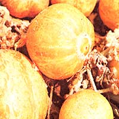
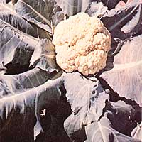
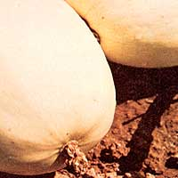
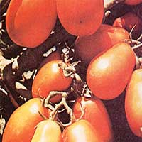
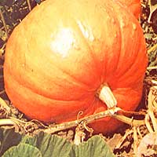
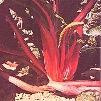
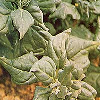
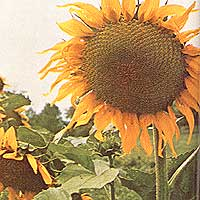

Anyone who's ever skimmed the pages of a seed catalog knows how frustrating it can be to choose the "best" variety of corn, squash, carrots, or tomatoes . . . when so many varieties carry such descriptions as "Most productive)", "Bears early!", "Delicious taste!", etc. And yet, the selection of high-performance vegetable varieties doesn't have to be an irksome and perplexing task . . . as Derek Fell (MOTHER's gardening expert) explains below.
In my last article (see MOTHER NO. 44, pages 56-60), I talked about vegetable varieties noted for spectacular flavor, since tastiness seems to be the single quality home gardeners desire most in a vegetable. Other worthwhile-sometimes essential -traits can, however, be bred into vegetables . . . which is why seed catalogs and store displays offer such a bewildering array of tomatoes, lettuce, corn, carrots, squash, and other crops (often as many as 80 different varieties of a single vegetable).
Right now, then, I'd like to examine some of these other special qualities, and talk about how they may affect your garden's overall performance.
Before you buy any vegetable it's imperative that you check the "average number of days to maturity" printed on the seed package or listed at the beginning of the catalog description. A difference of just a few days in this figure can-for many gardeners-mean the difference between a bountiful harvest of tender, juicy edibles . . . and no harvest at all.
Take cauliflower, for instance. Over much of the U.S., this crop simply can't be grown in spring without some risk of the plants bolting to seed during their final days of ripening. By contrast, an early-variety cauliflower-such as Snow Crown Hybrid (which matures ten days earlier than some standard varieties)-has a good chance of forming quality heads before the onset of hot weather, and thus can be grown successfully in areas where other types of cauliflower would fail to produce.
It's the same story with Green Comet broccoli (which heads up a full ten days before other varieties) and Little Finger carrots (which are ready to eat as much as two weeks ahead of Imperator, Gold Pak, and other long, tapering types).
When it comes to lettuce, you'll find that-as a rule-the crisp-headed varieties (Great Lakes, for instance) mature a full month later than loose-head types (such as Salad Bowl). Even among cabbages, maturity dates can vary from 70 days (for Earliana and Stonehead) to 110 days (for Penn State Ballhead) . . . a difference of more than five weeks!
Unfortunately, earliness and great flavor rarely go together . . . as is the case, for instance, with tomatoes. This is why many gardeners, in an attempt to have the best of both worlds, plant both an extra-early tomato (Presto, Red Pak, or Pixie Hybrid) for a quick harvest and a mid-season or late variety (such as Delicious) for superior flavor.
When high yields are essential (as they are for those of us who have tiny gardens or grow vegetables to can, freeze, and/or sell), selection of the proper vegetable variety can be critical, since some varieties bear two or three times as heavily as others. (Jade Cross brussels sprouts, for instance, yield three times as many sprouts as standard varieties, and that harvest starts some ten days earlier too! )
Some specific recommendations:
If you intend to grow paste-type (pear or Italian) tomatoes, you'll find that the Roma hybrid yields twice as many luscious red fruits as any other variety in this group.
And if you want more cabbages per row, stay clear of the big varieties that require two-foot spacing. By growing a compact type-such as Stonehead hybrid-you'll end up with many more (though smaller) heads per square rod of garden space.
Until you've seen an entire tomato crop succumb to wilt-or watched your precious cucumber vines mysteriously shrivel up and die before yielding a single cuke-you never fully appreciate the importance of disease resistance.
Some vegetables-it seems-are inherently immune to wilts and rots . . . but others are extremely susceptible to infection. Among cucumbers, for example, virus diseases are so prevalent that it's no longer worth the risk to plant "old favorites" like Long Green Improved. Better by far to stick with disease-resistant varieties, such as Marketmore 70.
As it turns out, the same disease that plagues cucumbers also attacks zucchini squash . . . which is why you'll often see the latter poop out around midsummer. (Someday soon-when the breeders who are working to perfect a disease-resistant zucchini squash succeed in their quest-the productivity of this crop is likely to double.)
Happily, disease-resistant tomatoes-identified by the letters "VF" and "N"-are already widely available. The "VF" stands for verticillium and fusarium wilt resistance, while the "N" indicates resistance to nematodes (microscopic worms that attack root systems).
Many gardeners like to grow giant-size vegetables . . . perhaps to win a contest, impress the neighbors, or just for fun. The most popular "large economy size " crops at the present time are pumpkins, tomatoes, cucumbers, and sunflowers.
Among pumpkins, the variety to choose for sheer bulk is Big Max, a breed which-with proper care and feeding-regularly produces fruits that weigh more than a hundred pounds. If you want even heftier pumpkins, however, all you have to do is attend the nearest pumpkin-growing contest in the fall and ask to buy seeds. (In our local-Newtown, Pennsylvania-pumpkin festival, farmers start with seed obtained from the previous year's winner, so that the next Grand Champion always has a chance of being a bit bigger still.)
The variety of tomato with the best chance of breaking the current world record of four pounds for an individual fruit is the one called Delicious. (In addition to prodigious bulk, this variety also delivers great flavor . . . a hard-to-beat combination.)
At ten to twelve pounds per fruit, Thompson & Morgan's aptly named Zeppelin cucumber is one of the largest cukes you're likely to grow . . . and one of the best tasting. Fact is, the monster's flesh retains its crisp, clean flavor even after the fruit's bright green skin has turned yellow.
There are two records you can go after with sunflowers: head size and stalk height. Burpee's Mammoth excels in both departments: Head diameters of two feet and overall heights of twelve feet are not uncommon with Mammoth . . . and-as a bonus-you get an extra-heavy yield of nutty seeds.
Thanks largely to the health food movement that's now sweeping America, a few of the more progressive seed companies have begun to market vegetables (carrots, tomatoes, and beans in particular) of exceptionally high nutritional value.
An example of this is a carrot variety known as Juwarot, which has twice the vitamin A content of regular carrots (and-consequently-an intensely reddish orange color). I'm told that in Europe the very best carrot juice is made exclusively from this variety . . . no doubt because of Juwarot's unique combination of superior food value, rich color, and sweet flavor.
Perhaps the most nutritious new vegetable to come along in years, however, is the Swedish-born Fiskeby V soybean. I first heard of this remarkable bean a few years ago while sipping ale in a London pub with a British garden editor and two British seedsmen. I'd just told the group that-in my opinion-a tremendously large market existed for a high-nutrition garden vegetable . . . when my editor friend (Ray Edwards of Practical Gardening ) began to describe a Swedish soybean he'd heard of that seemed to fit my specifications exactly. The new bean, he said, was called the Fiskeby V Original.
To cut a long story short, the two seedsmen-Bruce and Keith Sangster of Thompson & Morgan- investigated the Fiskeby V, bought up the entire world supply, and introduced it the next season as "the world's most nutritious vegetable". The result: They sold every bean they had . . . and to this day, the Fiskeby V remains Thompson & Morgan's biggest-selling catalog item.
How nutritious is the Fiskeby V Original? According to Thompson & Morgan, the new soybean contains 40% protein, is high in calcium, iron, and vitamins (particularly A, B 1 , B 12 , and C), and has no fat. I've heard it said that the Fiskeby V can totally replace meat as the main protein source in one's diet . . . which is exactly what 80-yearold plant breeder Sven Holmberg had in mind when he created the unique bean.
The nice thing about growing the Fiskeby V is that it thrives on poor soils. (Like all leguminous plants, soybeans take their nitrogen from the air instead of the ground.) Thus, 80 days after sowing seed you not only get a bountiful crop of sweet-tasting, highly nutritious beans (which can be eaten freshly cooked, or dried for long-term winter storage) . . . but you also get a lush, green cover crop that can be tilled back into the ground to enrich the soil.
Already an overwhelming success in Europe, the Fiskeby V soybean is beginning to gain a strong following in the U.S. (where it has been grown successfully as far north as Vermont). Who knows? In a few years, soybeans-the Fiskeby V in particular-may be as common a sight in American gardens as corn, lettuce, or ladybugs.
Today, many breeders are concentrating their efforts on producing crops that take up less garden space, so that those of us who don't have much acreage to begin with can grow a greater variety of vegetables. Cucumbers, cantaloupes, watermelons, and squash are all examples of crops that have been successfully transformed into spacesaving bush varieties.
Unfortunately, with these vining crops there seems to be a distinct link between the area covered by the vine and the flavor of the fruit. This is particularly true of melons: When vines are shortened through selective breeding, taste suffers.
In the past year, however, a few acceptable "vine fruits" have been produced on bushy plants. Burpee, for instance, has introduced a bush-type watermelon (Sugarbush) which-because it only sets about two fruits per plant-retains an appealing flavor. Also, the Park Seed Company has come out with a good-tasting new space-saving cucumber by the name of Bush Whopper (available for the first time this year).
Many vegetables-especially the leaf types (such as lettuce and cabbage)-go to seed quickly at the first hint of sultry weather. Certain varieties of these crops (notably Oak Leaf lettuce and Melody spinach) have, however, been bred to tolerate heat better than their peers (which also means that they crop over a longer season).
No true spinach will last throughout the summer . . . but a number of highly satisfactory "spinach substitutes" have been introduced lately, the best of which (in my opinion) is New Zealand Spinach. This novel plant grows as a ground-hugging vine and produces rich, green foliage all summer long (while staying within its bounds) . . . no matter how hot the days become.
Cold tolerance, alas, seems to be much more difficult to breed into vegetables than heat tolerance . . . although this quality has been incorporated successfully into certain watermelons and cantaloupes. Burpee's Early Hybrid Crenshaw is one example. It used to be that Crenshaws (which generally require 90 days to ripen) could only be grown in the South and in California . . . but the Burpee Early Hybrid, which can be grown successfully wherever cantaloupes fare well, has now changed all that.
In recent years, gardeners have seen the introduction of a number of highly unusual vegetables (yellow beets, for instance, and purple-podded beans) . . . crops that-because they never fail to draw expressions of astonishment from children, friends, and neighbors-make gardening a good deal more rewarding than it otherwise might be.
Few people realize, however, that "freak" vegetables rarely-if ever-become (and remain) popular for their novelty value alone. Quite the contrary: An unusual new vegetable-a yellow beet, say-is generally treated with suspicion by experienced growers. Thus, to command a following and stay in the catalogs a novel edible must have other desirable qualities in addition to its unique appearance. (Yellow beets-to follow our example a bit further-are popular among many gardeners because [1] they don't "bleed" as red beets do, and [2] they produce tastier greens than standard varieties.)
A few of the "novelty crops" now in vogue are:
Vegetable spaghetti. This age-old native of mainland China gets its name from the fact that the creamy yellow flesh inside its white, oval fruit pulls apart in spaghettilike strands after cooking. I first tasted this unique vegetable in Japan, at the home of Mr. Takeo Sakata (who introduced the crop to the Western world), and took an instant liking to it.
Lemon cucumbers. People grow these small, sweet fruits (which make excellent pickles) because they like the flavor . . . and-I suspect-because the vines that produce the lemon-like cukes are amazingly productive.
Celtuce. Related to (and as easy to grow as) lettuce, celtuce may be used both as a celery substitute and as lettuce . . . hence the name. The vegetable bears a thick central stalk which contains a crisp, juicy interior that can be eaten raw once the outer skin has been peeled away.
Purple-podded beans. These beans (variety name: Royalty) have two endearing virtues: [1] Bean beetles seem to avoid them, and [2] they're every bit as delicious frozen or canned as they are fresh. (Amazingly, the pods' purple color turns to a bright, appetizing green as soon as they're placed in boiling water.)
Ruby chard. This plant's crimson stalks add a great deal of color to any vegetable patch . . . and that's the main reason for its popularity. Many people grow the crop in flower gardens because of its striking appearance.
As you can see, numerous considerations (earliness, yield, disease resistance, growth habit, and many other factors) must be taken into account when choosing the vegetable varieties that you want to grow. But to me, that's part of the fun of gardening: being able to pick from dozens of familiar (and unfamiliar) vegetables . . . and discovering-on occasion-something new and different that adds measurably to my gardening enjoyment.
The next time YOU open a catalog and find yourself confronted by as many as 80 varieties of tomatoes, and perhaps 60 types of lettuce, don't despair. Just remember: Variety is the spice of life . . . and the spice of gardening!
|
 LEMON CUCUMBER |
 CAULIFLOWER SNOW CROWN |
 SPHAGHETTI SQUASH |
|
 TOMATO ROMA VF |
 BIG MAX PUMPKIN |
 RUBY CHARD |
|
 NEW ZEALAND SPINACH |
 SUNFLOWER, MAMMOTH RUSSIAN |
|